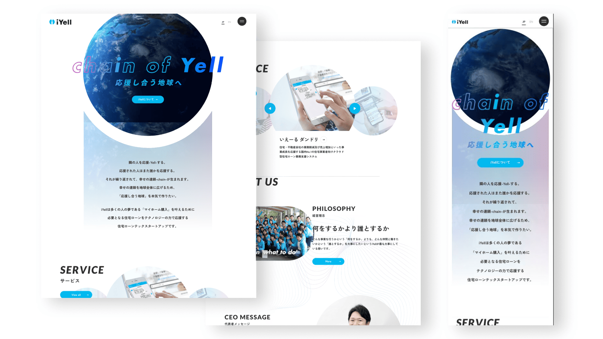
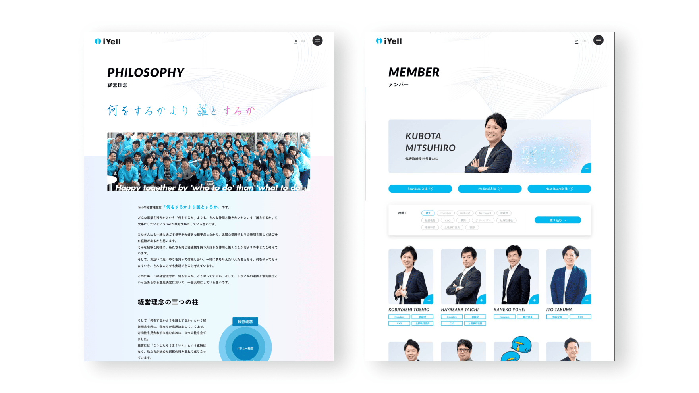

メインデザイナーとして参画し、UIデザインやサイト全体のデザイン、ビジュアル作成を担当しました。コンセプトは「next iYell」。知的で先進的な「Job version」と、情熱的でエモーショナルな「Mind version」という相反する要素を融合し、イエールブルーやマゼンタを基調にiYellらしさを表現しました。トップページでは、ロゴマークの「i」から動画が覗くパララックス演出を採用し、「Technology of the yell」というコピーを基軸にブランド世界観を強調。大規模なページ構成ながらも、運用がクライアント側でスムーズに行えるよう、使いやすさを意識したデザインに仕上げました。
 